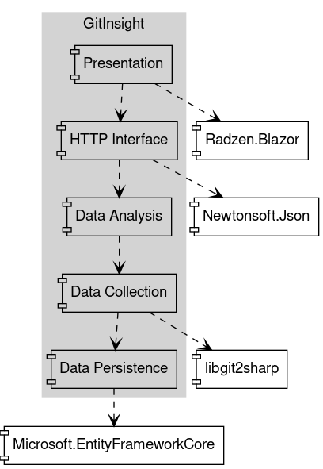
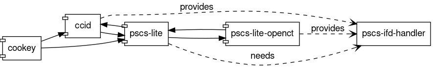

class: center, middle <img src="https://www.saa-authors.eu/picture/739/ftw_768/saa-mtcwmza4nzq5mq.jpg" width="50%"> # Analysis, Design and Software Architecture ## Software Engineering Session 11 Helge Pfeiffer, Assistant Professor,<br> [Research Center for Government IT](https://www.itu.dk/forskning/institutter/institut-for-datalogi/forskningscenter-for-offentlig-it),<br> [IT University of Copenhagen, Denmark](https://www.itu.dk)<br> `ropf@itu.dk` --- class: center, middle # Info and Feedback --- ### Trial Exams I shared more trial exams via [LearnIT](https://learnit.itu.dk/course/view.php?id=3021292) --- ### Projetcs: Code Review in the large... I love that I can see some groups working actively on the project and struggling along! ❤❤❤ --- ### Are you (a) week(s) behind? Looking at your repositories, I believe that multiple groups are at least one week up to multiple weeks behind schedule... What is the reason for that? <img src="https://i.imgur.com/V1v22dw.gif" width="80%"> --- ### Documentation Are you sure that you document what is required from week to week? We believe being able to draw the diagrams required in the weekly iterations is a quite good task for exam preparation ;) For those of you who have created the respective diagrams, make sure that they reflect the current state of your project (perhaps update them once per week at the end of an iteration). --- ### Secrets in GitHub Actions Workflows Under your repository choose `Settings` (on top) -> `Secrets` (left) -> `Actions` (below) and add a `New repository secret` (green button on top right). The value of that secret can be assessed in a workflow file via the name (e.g., `YOUR_SECRET_NAME`) that you assign it in that configuration window. The syntax for that is: ``` ${{ secrets.YOUR_SECRET_NAME }} ``` Find more information on that in the [documentation](https://docs.github.com/en/actions/using-workflows/workflow-syntax-for-github-actions#example-using-secrets) --- ### Testing I can see a lot of unit tests, rarely integration tests, and few end-to-end tests? --- ### Activity Diagrams --- ### REST APIs / Blazor WebAssembly Frontends? For multiple groups, I am wondering where they are? <img src="https://media1.giphy.com/media/26n6WywJyh39n1pBu/giphy.gif" width="80%"> --- ### Pulling with `libgit2sharp` What might be problematic with the following code? ```csharp public void pullRepository(string repositoryPath){ var repository = new Repository(repositoryPath); var signature = new Signature("Anonym", "anonym@itu.dk", DateTime.Now); Commands.Pull(repository, signature, null); } ``` ```csharp void CheckForGitUpdates(Repository repo) { LibGit2Sharp.PullOptions options = new LibGit2Sharp.PullOptions(); options.FetchOptions = new FetchOptions(); options.FetchOptions.CredentialsProvider = new CredentialsHandler( (url, usernameFromUrl, types) => new UsernamePasswordCredentials() { Username = "USERNAME", Password = "PASSWORD" }); Commands.Pull(repo, signature, options); } ``` Source: <https://github.com/libgit2/libgit2sharp/wiki/git-pull> --- ### Design I can see code like in the following, when you look closely, is there a Design Pattern that comes to mind as being suitable? ```csharp var pageSettings = $"?page={page}&per_page={perPage}"; var url = $"https://api.github.com/repos/{githubName}/{repoName}/forks{pageSettings}"; var json = client.GetStringAsync(url); var result = (Newtonsoft.Json.Linq.JArray)JsonConvert.DeserializeObject(json.Result)!; ``` ```csharp var forks = await analyzeForks(githubApiKey, username, repoName); var options = new JsonSerializerOptions { WriteIndented = true }; var jsonString = JsonSerializer.Serialize(forks, options); return jsonString; ``` --- ### Design Patterns, which Design Pattern can support you when relying on third-party dependencies? ##### Newtonsoft.Json API ```csharp Product product = new Product(); product.Name = "Apple"; product.Expiry = new DateTime(2008, 12, 28); product.Sizes = new string[] { "Small" }; string json = JsonConvert.SerializeObject(product); // { // "Name": "Apple", // "Expiry": "2008-12-28T00:00:00", // "Sizes": [ // "Small" // ] // } ``` ```csharp string json = @"{ 'Name': 'Bad Boys', 'ReleaseDate': '1995-4-7T00:00:00', 'Genres': [ 'Action', 'Comedy' ] }"; Movie m = JsonConvert.DeserializeObject<Movie>(json); ``` Source: <https://www.newtonsoft.com/json> --- ##### System.Text.Json API ```csharp class WeatherForecast { public DateTimeOffset Date { get; set; } public int TemperatureC { get; set; } public string Summary { get; set; } } string Serialize(WeatherForecast value) { return JsonSerializer.ToString<WeatherForecast>(value); } ``` ```csharp // { // "Date": "2013-01-20T00:00:00Z", // "TemperatureC": 42, // "Summary": "Typical summer in Seattle. Not.", // } WeatherForecast Deserialize(string json) { var options = new JsonSerializerOptions { AllowTrailingCommas = true }; return JsonSerializer.Parse<WeatherForecast>(json, options); } ``` Source: <https://devblogs.microsoft.com/dotnet/try-the-new-system-text-json-apis/> --- ##### Json.Net API ```csharp class Pet { public int id; public string name; } var petJson = JsonNet.Serialize(pet); ``` ```csharp var pet = JsonNet.Deserialize<Pet>(petJson); ``` Source: <https://github.com/obarlik/Json.Net> --- ##### Jil API ```csharp using(var output = new StringWriter()) { JSON.Serialize( new { MyInt = 1, MyString = "hello world", // etc. }, output ); } ``` ```csharp using(var input = new StringReader(myString)) { var result = JSON.Deserialize<MyType>(input); } ``` Source: <https://github.com/kevin-montrose/Jilv> --- class: center, middle # Package and Component Design --- ### Design Principles for Component Design Together with the SOLID design principles, R. Martins introduced six principles about package (component) design <http://butunclebob.com/ArticleS.UncleBob.PrinciplesOfOod> These are: - Principles of Component Cohesion: Granularity * _REP_ The Reuse/Release Equivalence Principle * _CCP_ The Common Closure Principle * _CRP_ The Common Reuse Principle - Principles of Component Coupling: Stability * _ADP_ The Acyclic Dependencies Principle * _SDP_ The Stable Dependencies Principle * _SAP_ The Stable Abstractions Principle They seem to be less often discussed, is it because the abbreviation _RCCASS_ is less catchy than SOLID? --- class: center, middle # Principles of Component Cohesion: Granularity ### Balancing the opposing forces of reusability vs. developability --- ### The Reuse/Release Equivalence Principle (REP) > The granule of reuse is the granule of release. > > R. Martin et al. _"Agile Principles, Patterns, and Practices in C#"_ -- In earlier versions it was: > The granule of reuse is the granule of release. Only components that are released through a tracking system can be effectively reused. This granule is the package. > > [R. Martin _Granularity_](https://drive.google.com/file/d/0BwhCYaYDn8EgOGM2ZGFhNmYtNmE4ZS00OGY5LWFkZTYtMjE0ZGNjODQ0MjEx/view?resourcekey=0-7i-jVGjVYvezk1_2CttrFw) --- ### The Reuse/Release Equivalence Principle (REP) > I prefer to define reuse as follows. I reuse code if, and only if, I never need to look at the source code (other than the public portions of header files). I need only link with static libraries or include dynamic libraries. Whenever these libraries are fixed or enhanced, I receive a new version which I can then integrate into my system when opportunity allows. > > That is, I expect the code I am reusing to be treated like a product. It is not maintained by me. It is not distributed by me. I am the customer, and the author, or some other entity, is responsible for maintaining it. > -- > [...] > when I reuse something in a released library, I am in effect a client of the entire library. Whether the changes affect me or not, I will have to integrate with each new version of the library when it comes out, so that I can take advantage of later enhancements and fixes. > > [R. Martin _Granularity_](https://drive.google.com/file/d/0BwhCYaYDn8EgOGM2ZGFhNmYtNmE4ZS00OGY5LWFkZTYtMjE0ZGNjODQ0MjEx/view?resourcekey=0-7i-jVGjVYvezk1_2CttrFw) --- ### The Reuse/Release Equivalence Principle (REP)??? -- That does not mean that you have to use all code that is released as a component. It just means that when reusing code, then you depend on the entire package even though you might only reuse a single method from a single class from it. That is, you do not copy only a single class or method into your code. -- #### What are the packages or components that Martin means here? -- #### Further design considerations with REP > If a component contains software that should be reused, it should not also contain software that is not designed for reuse. _Either all the classes in a component are reusable, or none of them are._ > -- > [...] Thus, we want all the classes in a component to be reusable by the same audience. > > R. Martin et al. _"Agile Principles, Patterns, and Practices in C#"_ --- ### Reflection: REP > What do you expect from the author of a class library that you are planning to reuse? Certainly, you want good documentation, working code, well-specified interfaces, and so on. > [...] -- > > you want the author to guarantee to maintain it for you. After all, if you have to maintain it, you are going to have to invest a tremendous amount of time into it, time that might be better spent designing a smaller and better component for yourself. > -- > [...] you are going to want the author to notify you of any changes planned to the interface and functionality of the code. But notification is not enough. The author must give you the choice to refuse to use any new versions > -- > [...] the author must guarantee to support your use of the old version for a time. [...] If the author won’t agree to support your use of older versions, you may have to seriously consider whether you want to use that code and be subject to the author’s capricious changes. > > R. Martin et al. _"Agile Principles, Patterns, and Practices in C#"_ -- Is that realistic for reuse of open-source components, i.e., for packages that you receive from NuGet? For example: <https://www.nuget.org/packages/Requests.NET> --- ### Reflection: REP in open-source The above was written in a time before wide-spread reuse of open-source code via package managers. When using open-source packages: * be humble * be polite and thankful * offer your help in case of problems * if you disagree with a project's direction, you are usually free to fork it * you can always implement your own solution, but this is what Martin would like to reduce :) --- ### The Common Reuse Principle (CRP) > The classes in a component are reused together. If you reuse one of the classes in a component, you reuse them all. > > R. Martin et al. _"Agile Principles, Patterns, and Practices in C#"_ -- * Reusable classes collaborate with other classes that are part of the reusable abstraction * CRP suggests to group these classes in the same component * That is, one would expect many dependencies between classes of a component. * Additionally, classes that are not tightly related to other classes should not be organized into that component. --- ### The Common Closure Principle (CCP) > The classes in a component should be closed together against the same kinds of changes. A change that affects a component affects all the classes in that component and no other components. > > R. Martin et al. _"Agile Principles, Patterns, and Practices in C#"_ -- * ... the Single-Responsibility Principle (SRP) for components - a component should not have multiple reasons to change * related to Open/Closed Principle (OCP) too - components should be closed to the most common kinds of experienced changes --- ### The REP, CRP, and CCP in practice If you were to create components for your _GitInsight_ applications, how could they look like? <img src="images/.png" width="40%"> --- ### Did you meet this kind of component structure somewhere? ##### [Case: API for NRK TV, NRK Super, and NRK Radio](https://nrkbeta.no/2017/04/29/undoing-the-harm-of-layers/) Functional-oriented decomposition partitioning strategy: <img src="https://nrkbeta.no/wp-content/uploads/2017/04/Uten-navn.png" width="20%"> --- class: center, middle # Principles of Component Coupling: Stability ### Balancing the opposing forces of developability vs. logical design --- ### The Acyclic Dependencies Principle (ADP) > Allow no cycles in the component dependency graph. > > R. Martin et al. _"Agile Principles, Patterns, and Practices in C#"_  * How does Martin suggest to build your application? * What would a cycle in a dependency graph mean? --- ### Conway's Law and Martin's ADP section Martin suggests: > [...] to partition the development environment into releasable components. The components become units of work that can be the responsibility of a developer or a team of developers. > > R. Martin et al. _"Agile Principles, Patterns, and Practices in C#"_ What do you think about this partitioning strategy? --- ### Conway's Law and Martin's ADP section <img src="https://www.melconway.com/Home/Committees_Paper_files/commfig1.gif" width="30%"> > Any organization that designs a system (defined more broadly here than just information systems) will inevitably produce a design whose structure is a copy of the organization's communication structure. > > [Melvin E. Conway](https://www.melconway.com/Home/Committees_Paper.html) --- ### Effects of cyclic component dependencies A package manager might not be able to install software:  <https://unix.stackexchange.com/questions/178768/installing-rpm-packages-with-circular-dependency> --- ### How to break a cycle in component dependencies? -- Martin suggests to either * extract code that both components require into a new component that the two others depend on, or * to apply DIP. How could the latter look like? --- ### The Stable-Dependencies Principle (SDP) > Depend in the direction of stability. > > R. Martin et al. _"Agile Principles, Patterns, and Practices in C#"_ That is, the deeper in a dependency graph the more stable a component should be. But what is stability? --- ### Stability metric * _I_ = 1, maximally instable component (no incoming dependencies, only outgoing dependencies) * _I_ = 0, maximally stable component (no outgoing dependencies, only incoming dependencies) --- @Helge: sketch it on whiteboard --- ### The Stable-Abstractions Principle (SAP) > A component should be as abstract as it is stable. > > R. Martin et al. _"Agile Principles, Patterns, and Practices in C#"_ Exceptions are: * concrete utility libraries or DB schemas --- ### Abstractness metric * _A_ = 0 a component has no abstract classes * _A_ = 1 a component contains only abstract classes -- Source: R. Martin et al. _"Agile Principles, Patterns, and Practices in C#"_ --- ### Stability > The dependency management metrics described in this chapter measure the conformance of a design to a pattern of dependency and abstraction that I think is a “good” pattern. > Experience has shown that certain dependencies are good and others are bad. This pattern reflects that experience. However, a metric is not a god; it is merely a measurement against an arbitrary standard. It is certainly possible that the standard chosen in this chapter is appropriate only for certain applications and not for others. It may also be that far better metrics can be used to measure the quality of a design. > > R. Martin et al. _"Agile Principles, Patterns, and Practices in C#"_ --- class: center, middle # _RCCASS_ and software reuse in times of open-source package managers --- ### _RCCASS_ as a guide for choosing third-party dependencies Which of the presented six _RCCASS_ principles can guide you in choosing a package from NuGet? For example, * https://www.nuget.org/packages/Newtonsoft.Json/13.0.2-beta3 * https://www.nuget.org/packages/System.Text.Json * https://www.nuget.org/packages/JSON * https://www.nuget.org/packages/Json.Net * https://www.nuget.org/packages/Jil/3.0.0-alpha2 --- ### Dependency Hell > [...] a colloquial term for the frustration of some software users who have installed software packages which have dependencies on specific versions of other software packages. > > <https://en.wikipedia.org/wiki/Dependency_hell> <img src="https://djmm.me/static/e86af1679041374f5c64ffbd0345bce2/e39d5/site-dependencies-lodash.png" width="50%"> Source: <https://djmm.me/post/a-trip-through-dependency-hell/> --- ### Forms of Dependency Hell * Many dependencies * Long chains of dependencies * Conflicting dependencies * Circular dependencies * Package manager dependencies * Diamond dependency Source: <https://en.wikipedia.org/wiki/Dependency_hell> --- ### State of modern software reuse <img src="https://imgs.xkcd.com/comics/dependency_2x.png" width="30%"> Source: <https://xkcd.com/2347/> -- This is not folklore, this is reality: > [...] in 2014 two-thirds of all webservers were running OpenSSL (today likely more). Back then, the OpenSSL project was run by few volunteers with only one full-time developer at a low income [2]. General public became first aware of the wide-spread dependency on OpenSSL, when the [Heartbleed bug](https://nvd.nist.gov/vuln/detail/CVE-2014-0160) was discovered. The combination of many direct or indirect (transitive) dependents in combination with being maintained by only few persons rendered OpenSSL a critical project. > > [Pfeiffer _"Identifying Critical Projects via PageRank and Truck Factor"_](https://itu.dk/~ropf/blog/assets/msr2021_pfeiffer.pdf) --- ### Granularity (_RCCASS_) Certain software ecosystems are built on so called [_trivial packages_](https://rabeabdalkareem.github.io/files/4-Abdalkareem_FSE2017.pdf) (e.g., NPM packages with ≤ 35 LOC and ≤ 10 cyclomatic complexity (McCabe)). For example, now removed from the ecosystem but back then popular [left-pad](https://github.com/left-pad/left-pad) package with 2,486,696 downloads in Feb. 2016: ```javascript module.exports = leftpad; function leftpad (str, len, ch) { str = String(str); var i = -1; if (!ch && ch !== 0) ch = ' '; len = len - str.length; while (++i < len) { str = ch + str; } return str; } ``` --- ### Granularity (_RCCASS_) Another example, [`isarray`](https://www.npmjs.com/package/isarray) with 75,849,218 weekly downloads and 1094 packages that directly depend on it: ```javascript var toString = {}.toString; module.exports = Array.isArray || function (arr) { return toString.call(arr) === '[object Array]'; }; ``` -- > Trivial packages are common and popular. Of the 231,092 npm packages in our dataset, 16.8% of them are trivial packages. Moreover, of the 38,807 Node.js applications on GitHub, 10.9% of them directly depend on one or more trivial packages. > > [Abdalkareem et al. _"Why Do Developers Use Trivial Packages? An Empirical Case Study on npm"_](https://rabeabdalkareem.github.io/files/4-Abdalkareem_FSE2017.pdf) --- ### Granularity (_RCCASS_) recommendations concerning trivial components * **Do not** depend on them! * **Do not** create and publish trivial components! Just because you technically can and others are using them, do not contribute to creating a [brittle world](https://www.theregister.com/2016/03/23/npm_left_pad_chaos/). > Every package that you use adds yet another dependency to your project. Dependencies, by their very name, are things you need in order for your code to function. The more dependencies you take on, the more points of failure you have. Not to mention the more chance for error: have you vetted any of the programmers who have written these functions that you depend on daily? > > Take on a dependency for any complex functionality that would take a lot of time, money, and/or debugging to write yourself. Things like a database access layer (ORM) or caching client should be dependencies because they’re complicated and the risk of the dependency is well worth the savings and efficiency. > > [D. Haney](https://www.davidhaney.io/npm-left-pad-have-we-forgotten-how-to-program/) How could a component look like that provides `leftpad` functionality and that is well designed? --- ### Which _RCCASS_ principle is violated? [`pino`](https://www.npmjs.com/package/pino) is a logging library that logs to JSON. Which _RCCASS_ principle is violated when you know that 3436 NPM packages that require [`pino`](https://www.npmjs.com/package/pino) and 61 NPM packages that require [`pino-abstract-transport`](https://www.npmjs.com/package/pino-abstract-transport). Image Source: <https://npm.anvaka.com/#/view/2d/pino> <!-- https://www.npmjs.com/package/pino?activeTab=readme https://npm.anvaka.com/#/view/2d/browserify --> --- ### Reuse only functionality of your main programming languages standard library --- ### Reuse software carefully: License Incompatibilities <img src="images/deps.png" width="90%"> Deep dependency trees are an issue. For example, one might be unaware of [software license violations](https://www.theregister.com/2021/03/25/ruby_rails_code/) > [...] in March 2020 it was reported that 577,148 software projects which are build on top of Ruby on Rails (rails) face [license issues](https://www.theregister.com/2021/03/25/ruby_rails_code/). An indirect dependency of the web-application framework `rails` [...] switched its license from the permissive MIT to the more restrictive GPL-2.0. > > [Pfeiffer _"License Incompatibilities in Software Ecosystems"_](https://arxiv.org/pdf/2203.01634) --- ### Research with ecosystem dependency graphs > illustrates the vcpkg C/C++ ecosystem [...] Nodes are scaled to Eigenvector Centrality, which indicates the high influence of the packages `vcpkg-cmake` and `vcpkg-cmake-config`. Highlighted are dependents of these two. > > [Buchkova et al. _"DaSEA – A Dataset for Software Ecosystem Analysis"_](https://arxiv.org/pdf/2203.01634) --- ### Potential Theses Topics --- ### Potential Theses Topics #### DaSEA – A Dataset for Software Ecosystem Analysis The [DaSEA](https://github.com/DaSEA-project/DASEA) project was born out of the research project and MSc of three students. Find a deeper [description of the dataset in the paper](https://itu.dk/~ropf/blog/assets/msr2022.pdf) and a high-level introduction in [the presentation](https://mybinder.org/v2/gh/DaSEA-project/MSR22-DaSEA-Dataset-Presentation/main?filepath=index.ipynb) and the [presentation video](https://itu.dk/~ropf/presentations/msr2022.html). Possible projects: - Add more miners, especially for other operating systems (APT, Gentoo's portage, RPM, ...) - Use the data for your research on software reuse, component metrics, etc. --- ### Potential Theses Topics #### Implement and Evaluate Criticality Score Recently, Google's Open Source team presented the [criticality score](https://github.com/ossf/criticality_score/blob/a02c8311fbbbd5d569ebaad3106ec08532b3a10c/Quantifying_criticality_algorithm.pdf), a metric to assess [_\"influence and importance\"_](https://github.com/ossf/criticality_score/blob/4a3e3e171ac403344060dbcfc43f47944afe77d0/README.md) of a project in an ecosystem from project specific signals, e.g., number of dependents, commit frequency, etc.\ The project's authors [would like to include a centrality metric in computation of their metric](https://github.com/ossf/criticality_score/issues/53#issuecomment-748556336), which is difficult for systems programming language ecosystems like C/C++. Find a more detailed [problem description in this paper](https://itu.dk/~ropf/blog/assets/msr2021_pfeiffer.pdf). Currently, two students are using the [DaSEA dataset](http://dasea.org), to compute ecosystem specific and global centrality ranks and include them in the metric. You could take over their project and finalize a tool that computes _critically_ automatically. <https://github.com/HelgeCPH/critical-projects/blob/master/data/output/nuget_top_1000.csv> --- ### Your turn!  * Go to the exercise session. * Work on the project, see <https://github.com/itu-bdsa/project-description#week-zero-week-47>